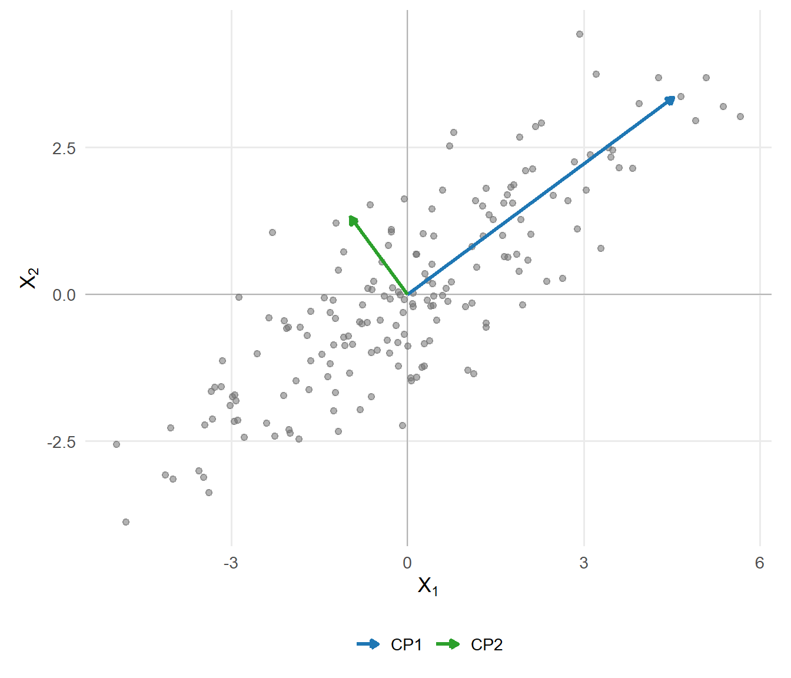
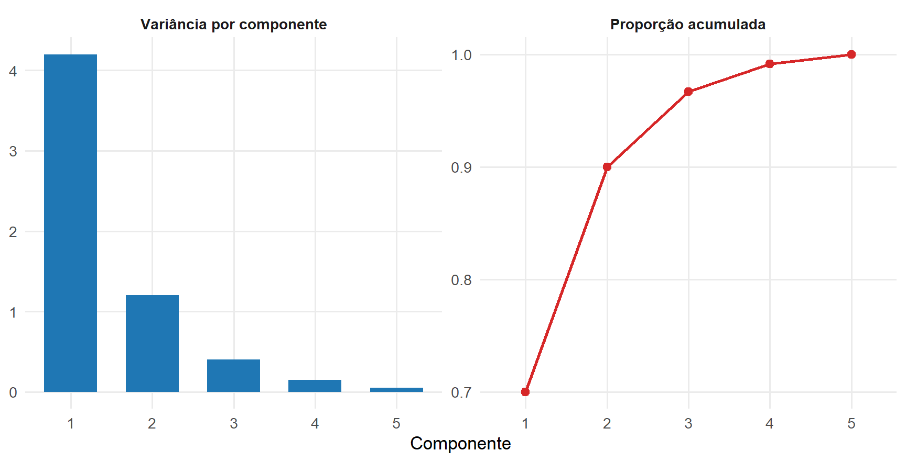
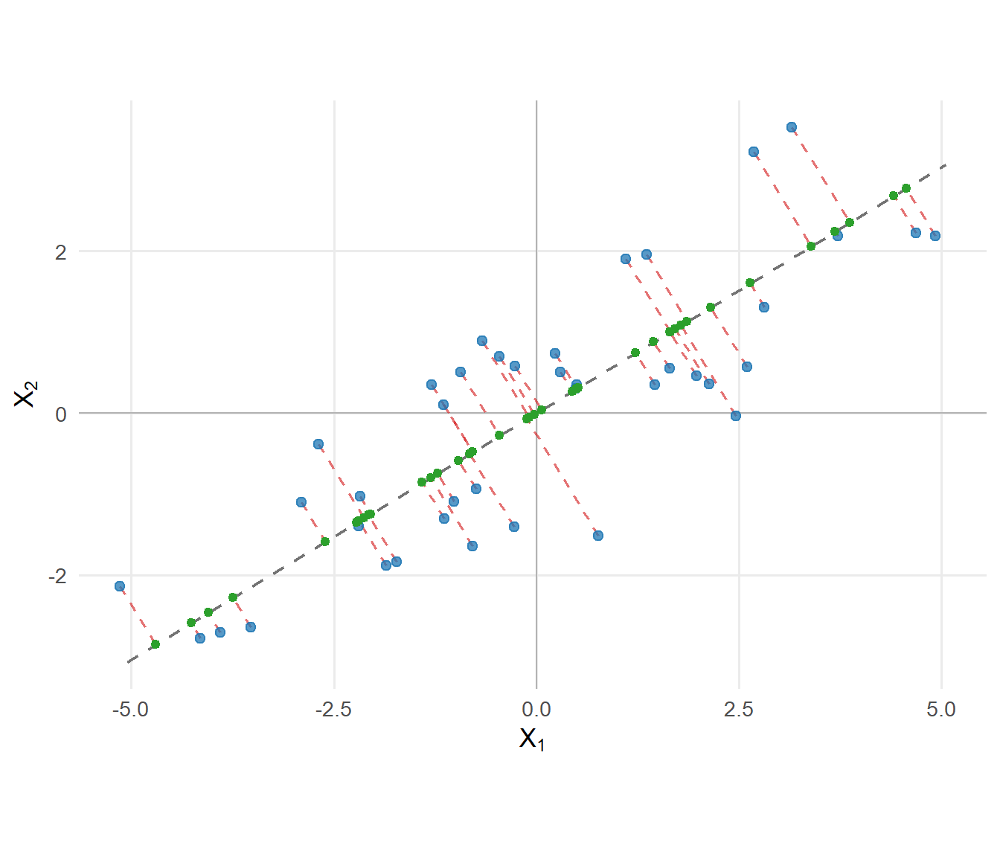
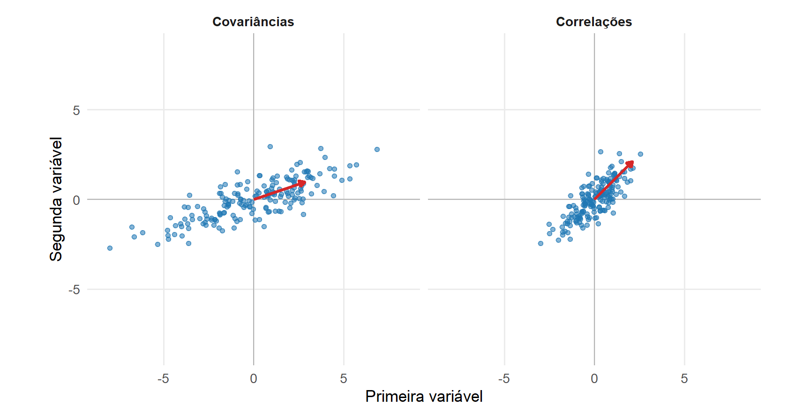
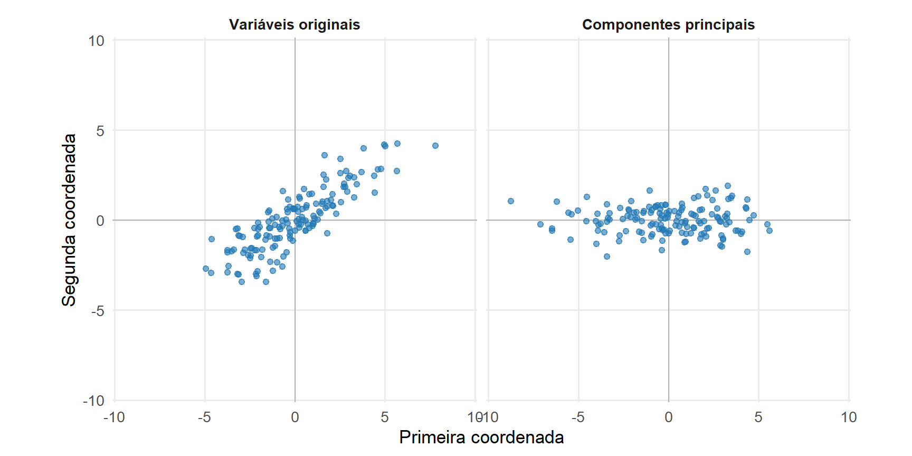
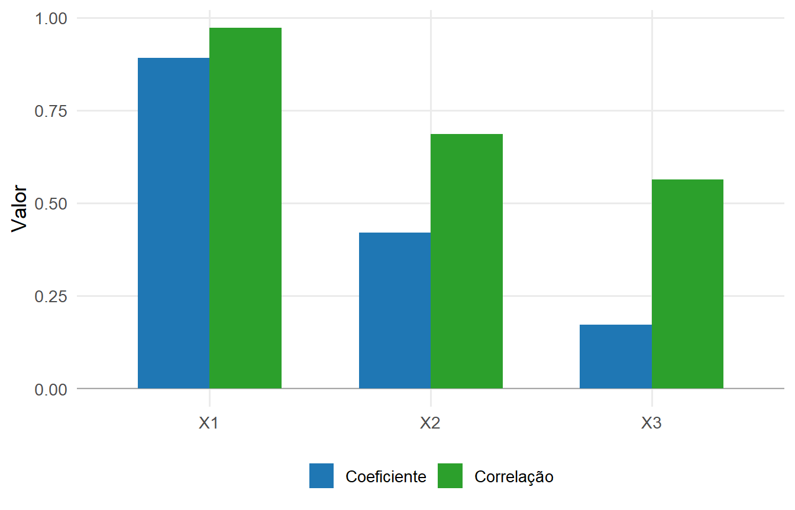
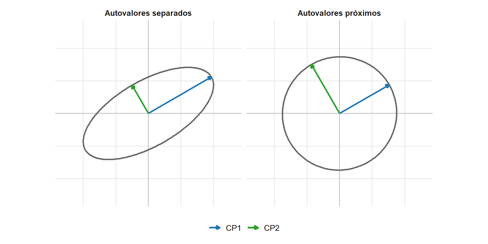

14 Formulação da Análise de Componentes Principais
A Análise de Componentes Principais (ACP) representa a variabilidade de um conjunto de variáveis por meio de combinações lineares ordenadas segundo a variância que concentram (Jolliffe, 2002).
Sua formulação reutiliza os fundamentos dos módulos anteriores sobre combinações lineares, projeções ortogonais, quociente de Rayleigh, decomposição espectral, SVD e matrizes de covariâncias e correlações. O mesmo problema pode ser caracterizado pela maximização sucessiva da variância, pela projeção sobre subespaços principais e pela aproximação de posto reduzido da matriz de dados centralizada.
O capítulo desenvolve essas formulações e suas relações. A ACP depende da estrutura de segunda ordem e não exige normalidade multivariada para sua definição; a normalidade acrescenta propriedades probabilísticas e resultados inferenciais específicos.
14.1 O problema de redução de dimensionalidade
Considere o vetor aleatório
\[ \boldsymbol{\mathsf X} = (X_1,\ldots,X_p)^\top \in \mathbb R^p, \]
com vetor de médias \(\boldsymbol{\mu}\) e matriz de covariâncias populacional \(\boldsymbol{\Sigma}\), definida na Definição 8.2.
Cada realização \(\mathbf x\in\mathbb R^p\) representa uma unidade por meio de \(p\) coordenadas. Quando várias dessas coordenadas apresentam associação linear, a variabilidade conjunta pode estar concentrada em um número menor de direções.
Essa situação pode ser entendida geometricamente. Uma nuvem de pontos em \(\mathbb R^2\) pode apresentar grande extensão em uma direção e pequena extensão na direção ortogonal, como será ilustrado na Figura 14.1. Embora duas coordenadas sejam necessárias para representar exatamente cada ponto, uma única direção pode concentrar a maior parte da dispersão da nuvem. Em dimensão \(p\), o mesmo princípio conduz à procura de um subespaço de dimensão \(k<p\) que represente adequadamente a variabilidade dos dados.
A ACP não seleciona diretamente \(k\) variáveis dentre as \(p\) variáveis originais. Ela constrói novas variáveis como combinações lineares das componentes de \(\boldsymbol{\mathsf X}\). Cada nova variável corresponde a uma direção no espaço das variáveis.
O vetor aleatório centralizado,
\[ \boldsymbol{\mathsf X}_c = \boldsymbol{\mathsf X} - \boldsymbol{\mu}, \]
tem média nula e preserva a matriz de covariâncias de \(\boldsymbol{\mathsf X}\). A centralização separa a localização da distribuição de sua estrutura de dispersão. Por isso, a formulação populacional da ACP pode ser construída diretamente a partir de \(\boldsymbol{\mathsf X}_c\) e de \(\boldsymbol{\Sigma}\).
Uma direção unitária
\[ \mathbf a \in \mathbb R^p, \qquad \mathbf a^\top\mathbf a=1, \]
produz a combinação linear
\[ Y = \mathbf a^\top \boldsymbol{\mathsf X}_c. \]
Como \(\mathbf a\) possui norma unitária, \(Y\) representa a coordenada de \(\boldsymbol{\mathsf X}_c\) na direção definida por \(\mathbf a\).
Pelo resultado sobre momentos de combinações lineares apresentado na Proposição 8.1,
\[ E(Y)=0 \]
e
\[ \operatorname{Var}(Y) = \mathbf a^\top \boldsymbol{\Sigma} \mathbf a. \]
A variância da combinação linear depende, portanto, da direção \(\mathbf a\). Algumas direções podem apresentar grande dispersão, enquanto outras apresentam pequena dispersão.
A ACP utiliza essa diferença para ordenar as direções. O primeiro objetivo consiste em encontrar a direção unitária de maior variabilidade. Depois são procuradas novas direções, ortogonais às anteriores, que preservem sucessivamente a maior variabilidade restante.
A Figura 14.1 representa uma nuvem bidimensional com variabilidade distinta segundo diferentes direções. A primeira direção principal acompanha a maior extensão da nuvem, enquanto a segunda é ortogonal à primeira e representa a variabilidade remanescente.
A maior dispersão ocorre na direção da primeira componente. A segunda componente representa a maior variabilidade possível entre as direções ortogonais à primeira. A figura transforma a ideia de maximização da variância em uma propriedade geométrica da nuvem.
A redução de dimensionalidade ocorre quando apenas as primeiras \(k<p\) direções são mantidas. A qualidade dessa representação depende da concentração da variabilidade nessas direções. Quando grande parte da variância total se concentra nas primeiras componentes, poucas direções podem representar adequadamente os dados. Quando a variabilidade se distribui de forma mais uniforme entre as componentes, a redução de dimensão implica perda proporcionalmente maior de informação.
14.2 Componentes principais como combinações lineares
A \(j\)-ésima componente principal populacional tem a forma
\[ Y_j = \mathbf a_j^\top \boldsymbol{\mathsf X}_c = \mathbf a_j^\top \left( \boldsymbol{\mathsf X} - \boldsymbol{\mu} \right), \]
em que
\[ \mathbf a_j \in \mathbb R^p \]
é o vetor de coeficientes da componente.
É importante distinguir os objetos envolvidos na formulação:
- \(\mathbf a_j\) define uma direção no espaço das variáveis;
- \(Y_j\) é uma variável aleatória obtida pela projeção de \(\boldsymbol{\mathsf X}_c\) nessa direção;
- a variância de \(Y_j\) quantifica a dispersão populacional representada pela direção;
- posteriormente, a versão amostral de \(\mathbf a_j\) permitirá calcular os escores das observações.
Para duas combinações lineares,
\[ Y_j = \mathbf a_j^\top \boldsymbol{\mathsf X}_c \]
e
\[ Y_\ell = \mathbf a_\ell^\top \boldsymbol{\mathsf X}_c, \]
tem-se
\[ \operatorname{Cov}(Y_j,Y_\ell) = \mathbf a_j^\top \boldsymbol{\Sigma} \mathbf a_\ell. \]
Assim, a matriz \(\boldsymbol{\Sigma}\) determina simultaneamente a variabilidade de cada direção e a covariância entre diferentes combinações lineares.
A restrição de norma unitária é necessária porque a variância depende da escala do vetor de coeficientes. Para qualquer constante \(c\),
\[ \operatorname{Var} \left( c\mathbf a^\top \boldsymbol{\mathsf X}_c \right) = c^2 \mathbf a^\top \boldsymbol{\Sigma} \mathbf a. \]
Sem controlar a norma de \(\mathbf a\), a variância poderia ser aumentada apenas multiplicando os coeficientes por uma constante. A condição
\[ \mathbf a^\top\mathbf a=1 \]
remove esse efeito de escala e transforma o problema em uma escolha de direção.
14.3 Primeira componente principal
A primeira componente principal é definida pela direção unitária que apresenta a maior variância.
O problema é
\[ \max_{\mathbf a_1\in\mathbb R^p} \mathbf a_1^\top \boldsymbol{\Sigma} \mathbf a_1, \]
sujeito a
\[ \mathbf a_1^\top \mathbf a_1 = 1. \]
Esse problema já possui a forma estudada no Módulo 1. O quociente de Rayleigh foi definido na Definição 5.7 e seus extremos foram caracterizados no Teorema 5.5. Aplicando esse resultado à matriz simétrica e semidefinida positiva \(\boldsymbol{\Sigma}\), o máximo é igual ao maior autovalor da matriz de covariâncias.
A variação do quociente de Rayleigh segundo a direção foi ilustrada na Figura 5.4. Na ACP, a matriz utilizada naquele problema passa a ser \(\boldsymbol{\Sigma}\), e o máximo do quociente corresponde à maior variância possível de uma combinação linear com coeficientes de norma unitária.
Se os autovalores de \(\boldsymbol{\Sigma}\) forem ordenados como
\[ \lambda_1 \geq \lambda_2 \geq \cdots \geq \lambda_p \geq 0, \]
e \(\mathbf a_1\) for um autovetor unitário associado a \(\lambda_1\), então
\[ \boldsymbol{\Sigma} \mathbf a_1 = \lambda_1 \mathbf a_1. \]
A primeira componente principal é
\[ Y_1 = \mathbf a_1^\top \boldsymbol{\mathsf X}_c, \]
e sua variância é
\[ \begin{aligned} \operatorname{Var}(Y_1) &= \mathbf a_1^\top \boldsymbol{\Sigma} \mathbf a_1\\ &= \mathbf a_1^\top \lambda_1 \mathbf a_1\\ &= \lambda_1. \end{aligned} \]
Portanto,
\[ \operatorname{Var}(Y_1) = \lambda_1. \]
O maior autovalor possui uma interpretação estatística direta: ele é a maior variância que pode ser obtida por uma combinação linear das variáveis com vetor de coeficientes de norma unitária.
O autovetor correspondente fornece a direção em que essa variância é alcançada. A primeira componente principal transforma esse resultado geométrico em uma nova variável.
A derivação por multiplicadores de Lagrange não precisa ser reconstruída aqui. O resultado geral que relaciona a otimização de uma forma quadrática aos autovetores já foi demonstrado no Teorema 5.6. A ACP utiliza esse resultado com
\[ \mathbf A = \boldsymbol{\Sigma}. \]
14.4 Componentes principais sucessivas
A primeira direção concentra a maior variabilidade possível em uma única coordenada. As componentes seguintes devem acrescentar novas direções sem repetir a informação linear já representada.
A segunda componente principal é definida como a combinação linear de maior variância entre as direções unitárias ortogonais à primeira:
\[ \max_{\mathbf a_2\in\mathbb R^p} \mathbf a_2^\top \boldsymbol{\Sigma} \mathbf a_2, \]
sujeito a
\[ \mathbf a_2^\top \mathbf a_2 = 1 \]
e
\[ \mathbf a_2^\top \mathbf a_1 = 0. \]
O mesmo princípio é aplicado sucessivamente. Para \(j=1,\ldots,p\), a \(j\)-ésima direção principal resolve
\[ \max_{\mathbf a_j\in\mathbb R^p} \mathbf a_j^\top \boldsymbol{\Sigma} \mathbf a_j, \]
sujeito a
\[ \mathbf a_j^\top \mathbf a_j = 1 \]
e
\[ \mathbf a_j^\top \mathbf a_\ell = 0, \qquad \ell=1,\ldots,j-1. \]
A caracterização variacional de direções sucessivas já foi estabelecida no Teorema 5.7. Aplicando esse resultado a \(\boldsymbol{\Sigma}\), obtém-se
\[ \boldsymbol{\Sigma} \mathbf a_j = \lambda_j \mathbf a_j, \qquad j=1,\ldots,p. \]
Assim, pode-se escolher uma base ortonormal de autovetores da matriz de covariâncias, ordenada de acordo com os autovalores decrescentes, para definir as direções principais. Quando um autovalor possui multiplicidade maior que um, os autovetores individuais dentro do autoespaço correspondente não são únicos; essa questão será retomada ao discutir as propriedades da solução.
A \(j\)-ésima componente principal é
\[ Y_j = \mathbf a_j^\top \boldsymbol{\mathsf X}_c \]
e possui variância
\[ \operatorname{Var}(Y_j) = \lambda_j. \]
Para \(j\neq\ell\),
\[ \begin{aligned} \operatorname{Cov}(Y_j,Y_\ell) &= \mathbf a_j^\top \boldsymbol{\Sigma} \mathbf a_\ell\\ &= \lambda_\ell \mathbf a_j^\top \mathbf a_\ell\\ &= 0. \end{aligned} \]
Logo, as componentes principais são não correlacionadas:
\[ \operatorname{Cov}(Y_j,Y_\ell) = 0, \qquad j\neq\ell. \]
Duas propriedades diferentes aparecem nessa construção. Os vetores de coeficientes são ortogonais,
\[ \mathbf a_j^\top \mathbf a_\ell = 0, \]
enquanto as componentes principais são não correlacionadas,
\[ \operatorname{Cov}(Y_j,Y_\ell) = 0. \]
A primeira propriedade pertence à geometria dos vetores de coeficientes. A segunda pertence à estrutura probabilística das variáveis construídas. Na ACP, a equação de autovetores
\[ \boldsymbol{\Sigma}\mathbf a_\ell = \lambda_\ell\mathbf a_\ell \]
faz a ligação entre essas duas propriedades.
A ausência de correlação não implica independência em uma distribuição geral. Se \(\boldsymbol{\mathsf X}\) possui distribuição normal multivariada, qualquer transformação linear também é normal, conforme Proposição 9.4. Nesse caso, o vetor das componentes principais é normal multivariado e possui matriz de covariâncias diagonal. Pelo resultado de independência para blocos normais de Proposição 9.6, as componentes principais são independentes.
A normalidade, portanto, acrescenta uma propriedade probabilística às componentes, mas não participa da definição da ACP.
14.5 Formulação espectral
Reunindo os vetores de coeficientes em
\[ \mathbf A = \begin{pmatrix} \mathbf a_1 & \mathbf a_2 & \cdots & \mathbf a_p \end{pmatrix}, \]
tem-se
\[ \mathbf A^\top \mathbf A = \mathbf I_p. \]
A matriz \(\mathbf A\) é ortogonal. Pelo Teorema Espectral de Teorema 5.4,
\[ \boldsymbol{\Sigma} = \mathbf A \boldsymbol{\Lambda} \mathbf A^\top, \]
em que
\[ \boldsymbol{\Lambda} = \operatorname{diag} ( \lambda_1,\ldots,\lambda_p ). \]
As componentes podem ser reunidas no vetor aleatório
\[ \boldsymbol{\mathsf Y} = \begin{pmatrix} Y_1\\ \vdots\\ Y_p \end{pmatrix} = \mathbf A^\top \boldsymbol{\mathsf X}_c. \]
Como
\[ E(\boldsymbol{\mathsf X}_c) = \mathbf0, \]
tem-se
\[ E(\boldsymbol{\mathsf Y}) = \mathbf0. \]
Pela regra de transformação da matriz de covariâncias estabelecida na Equação 8.18,
\[ \operatorname{Cov} ( \mathbf A^\top \boldsymbol{\mathsf X}_c ) = \mathbf A^\top \boldsymbol{\Sigma} \mathbf A. \]
Substituindo a decomposição espectral,
\[ \begin{aligned} \operatorname{Cov} ( \boldsymbol{\mathsf Y} ) &= \mathbf A^\top \mathbf A \boldsymbol{\Lambda} \mathbf A^\top \mathbf A\\ &= \boldsymbol{\Lambda}. \end{aligned} \]
Portanto,
\[ \operatorname{Cov} ( \boldsymbol{\mathsf Y} ) = \begin{pmatrix} \lambda_1 & 0 & \cdots & 0\\ 0 & \lambda_2 & \cdots & 0\\ \vdots & \vdots & \ddots & \vdots\\ 0 & 0 & \cdots & \lambda_p \end{pmatrix}. \]
A transformação para componentes principais diagonaliza a estrutura de covariâncias. As variáveis originais podem apresentar covariâncias diferentes de zero; no novo sistema de coordenadas, toda a variabilidade aparece distribuída ao longo de eixos não correlacionados.
A transformação completa
\[ \boldsymbol{\mathsf X}_c \longmapsto \boldsymbol{\mathsf Y} = \mathbf A^\top \boldsymbol{\mathsf X}_c \]
não reduz a dimensão. Ela representa o mesmo vetor em uma base ortonormal diferente. Pela propriedade de preservação geométrica das transformações ortogonais estabelecida na Proposição 4.10, produtos internos, normas e distâncias são preservados quando todas as \(p\) componentes são mantidas.
A redução ocorre somente quando a transformação é seguida pela retenção das primeiras \(k<p\) coordenadas.
14.6 Variância total e proporção de variância
A variância total foi definida na Definição 8.6 por
\[ V_T = \operatorname{tr} ( \boldsymbol{\Sigma} ). \]
Pela relação entre traço e autovalores estabelecida na Proposição 5.4,
\[ \operatorname{tr} ( \boldsymbol{\Sigma} ) = \sum_{j=1}^p \lambda_j. \]
Por outro lado,
\[ \operatorname{Cov} ( \boldsymbol{\mathsf Y} ) = \boldsymbol{\Lambda}, \]
de modo que
\[ \operatorname{tr} \left[ \operatorname{Cov} ( \boldsymbol{\mathsf Y} ) \right] = \sum_{j=1}^p \lambda_j. \]
Assim,
\[ \sum_{j=1}^p \operatorname{Var}(Y_j) = \operatorname{tr} ( \boldsymbol{\Sigma} ). \]
A ACP completa redistribui, entre novas coordenadas, a mesma variabilidade total presente nas variáveis originais. A ordenação dos autovalores concentra as maiores parcelas nas primeiras componentes.
Se
\[ \operatorname{tr} ( \boldsymbol{\Sigma} ) >0, \]
a proporção da variância total associada à componente \(j\) é
\[ \pi_j = \frac{ \lambda_j }{ \sum_{\ell=1}^p \lambda_\ell }. \]
Para as primeiras \(k\) componentes, a proporção acumulada é
\[ \Pi_k = \frac{ \sum_{j=1}^k \lambda_j }{ \sum_{\ell=1}^p \lambda_\ell }. \]
A variabilidade representada pelas primeiras \(k\) direções é
\[ \sum_{j=1}^k \lambda_j, \]
enquanto a variabilidade associada às direções descartadas é
\[ \sum_{j=k+1}^p \lambda_j. \]
A decomposição pode ser resumida pela Tabela 14.1.
| Componente | Direção | Variância | Proporção da variância total |
|---|---|---|---|
| \(Y_1\) | \(\mathbf a_1\) | \(\lambda_1\) | \(\lambda_1/\sum_{\ell=1}^p\lambda_\ell\) |
| \(Y_2\) | \(\mathbf a_2\) | \(\lambda_2\) | \(\lambda_2/\sum_{\ell=1}^p\lambda_\ell\) |
| \(\vdots\) | \(\vdots\) | \(\vdots\) | \(\vdots\) |
| \(Y_p\) | \(\mathbf a_p\) | \(\lambda_p\) | \(\lambda_p/\sum_{\ell=1}^p\lambda_\ell\) |
Exemplo 14.1 (Componentes principais de duas variáveis) Considere um vetor aleatório
\[ \boldsymbol{\mathsf X} = \begin{pmatrix} X_1\\ X_2 \end{pmatrix} \]
com matriz de covariâncias
\[ \boldsymbol{\Sigma} = \begin{pmatrix} 4 & 2\\ 2 & 4 \end{pmatrix}. \]
A decomposição espectral fornece os autovalores
\[ \lambda_1=6 \qquad \text{e} \qquad \lambda_2=2, \]
com autovetores unitários
\[ \mathbf a_1 = \frac{1}{\sqrt{2}} \begin{pmatrix} 1\\ 1 \end{pmatrix} \]
e
\[ \mathbf a_2 = \frac{1}{\sqrt{2}} \begin{pmatrix} 1\\ -1 \end{pmatrix}. \]
A primeira componente principal é
\[ Y_1 = \frac{ (X_1-\mu_1) + (X_2-\mu_2) }{ \sqrt{2} }, \]
com
\[ \operatorname{Var}(Y_1)=6. \]
A segunda componente é
\[ Y_2 = \frac{ (X_1-\mu_1) - (X_2-\mu_2) }{ \sqrt{2} }, \]
com
\[ \operatorname{Var}(Y_2)=2. \]
Como
\[ \boldsymbol{\Sigma} \mathbf a_2 = \lambda_2 \mathbf a_2 \]
e
\[ \mathbf a_1^\top \mathbf a_2 = 0, \]
tem-se
\[ \begin{aligned} \operatorname{Cov}(Y_1,Y_2) &= \mathbf a_1^\top \boldsymbol{\Sigma} \mathbf a_2\\ &= \lambda_2 \mathbf a_1^\top \mathbf a_2\\ &= 0. \end{aligned} \]
Portanto, as duas componentes são não correlacionadas.
A variância total é
\[ \operatorname{tr} \left( \boldsymbol{\Sigma} \right) = 4+4 = 8, \]
que coincide com
\[ \lambda_1+\lambda_2 = 6+2 = 8. \]
A primeira componente representa
\[ \frac{6}{8} = 75\% \]
da variabilidade total, enquanto a segunda representa
\[ \frac{2}{8} = 25\%. \]
Se a representação for reduzida de duas para uma dimensão, a direção
\[ \mathbf a_1 \]
preserva \(75\%\) da variabilidade e descarta \(25\%\). Nesse exemplo, a redução de dimensão possui interpretação direta: a maior parte da dispersão ocorre na direção em que as duas variáveis se deslocam conjuntamente.
A Figura 14.2 mostra, em um exemplo didático, duas leituras complementares dos autovalores. O primeiro painel apresenta a variância associada individualmente a cada componente. O segundo apresenta a proporção acumulada da variância representada pelas primeiras componentes.

A concentração dos primeiros autovalores determina a capacidade de redução linear de dimensão. Quando \(\Pi_k\) é elevada para um valor pequeno de \(k\), o subespaço principal representa grande parcela da variabilidade total. A proporção acumulada descreve a decomposição da variância, mas não estabelece um limite para a escolha do número de componentes.
A formulação até este ponto mostra que a ACP transforma o problema estatístico de preservar variabilidade em poucas direções em um problema espectral já resolvido matematicamente no Módulo 1. O passo seguinte consiste em mostrar que as primeiras \(k\) direções também definem um subespaço que maximiza a variabilidade projetada e minimiza o erro quadrático de reconstrução.
14.7 Subespaço principal e projeção
As primeiras \(k<p\) componentes principais definem um subespaço de dimensão \(k\) no qual a variabilidade de \(\boldsymbol{\mathsf X}\) será representada.
Considere uma base ortonormal de autovetores de \(\boldsymbol{\Sigma}\),
\[ \mathbf a_1,\ldots,\mathbf a_p, \]
ordenada de modo que
\[ \lambda_1 \geq \cdots \geq \lambda_p. \]
Defina
\[ \mathbf A_k = \begin{pmatrix} \mathbf a_1 & \cdots & \mathbf a_k \end{pmatrix} \in \mathbb R^{p\times k}. \]
Como esses vetores são ortonormais,
\[ \mathbf A_k^\top \mathbf A_k = \mathbf I_k. \]
Suas colunas geram um subespaço que maximiza a variabilidade projetada em dimensão \(k\).
Definição 14.1 (Subespaço principal) Seja
\[ \boldsymbol{\Sigma} \in \mathbb R^{p\times p} \]
uma matriz de covariâncias, com autovalores ordenados como
\[ \lambda_1 \geq \cdots \geq \lambda_p \geq 0, \]
e seja
\[ \mathbf a_1,\ldots,\mathbf a_p \]
uma base ortonormal de autovetores correspondente a essa ordenação.
Para \(1\leq k\leq p\), um subespaço principal de dimensão \(k\) é
\[ \mathcal S_k = \operatorname{span} \left\{ \mathbf a_1,\ldots,\mathbf a_k \right\}. \]
Se \(k<p\) e
\[ \lambda_k>\lambda_{k+1}, \]
o subespaço principal de dimensão \(k\) é único. Se
\[ \lambda_k=\lambda_{k+1}, \]
podem existir diferentes subespaços principais de dimensão \(k\) que preservam a mesma variabilidade máxima.
A matriz de projeção ortogonal sobre um subespaço principal \(\mathcal S_k\) é
\[ \mathbf P_k = \mathbf A_k \mathbf A_k^\top. \]
Essa expressão é uma aplicação direta da projeção sobre um subespaço com base ortonormal desenvolvida na Proposição 3.14.
As coordenadas de \(\boldsymbol{\mathsf X}_c\) nesse subespaço são
\[ \boldsymbol{\mathsf Y}_k = \mathbf A_k^\top \boldsymbol{\mathsf X}_c = \begin{pmatrix} Y_1\\ \vdots\\ Y_k \end{pmatrix}. \]
Sua matriz de covariâncias é
\[ \begin{aligned} \operatorname{Cov} \left( \boldsymbol{\mathsf Y}_k \right) &= \mathbf A_k^\top \boldsymbol{\Sigma} \mathbf A_k\\ &= \operatorname{diag} \left( \lambda_1,\ldots,\lambda_k \right). \end{aligned} \]
Portanto, a variância total das coordenadas mantidas é
\[ \operatorname{tr} \left[ \operatorname{Cov} \left( \boldsymbol{\mathsf Y}_k \right) \right] = \sum_{j=1}^k \lambda_j. \]
Esse resultado fornece uma interpretação conjunta das primeiras \(k\) componentes. A ACP não procura somente a melhor primeira direção e depois as seguintes de forma isolada. O conjunto das primeiras \(k\) direções determina um subespaço que concentra a maior variabilidade possível entre os subespaços lineares de mesma dimensão.
Considere qualquer matriz
\[ \mathbf Q = \begin{pmatrix} \mathbf q_1 & \cdots & \mathbf q_k \end{pmatrix} \in \mathbb R^{p\times k}, \]
com colunas ortonormais,
\[ \mathbf Q^\top \mathbf Q = \mathbf I_k. \]
A projeção de \(\boldsymbol{\mathsf X}_c\) sobre o subespaço gerado por \(\mathbf Q\) possui coordenadas
\[ \mathbf Q^\top \boldsymbol{\mathsf X}_c \]
e variância total
\[ \operatorname{tr} \left( \mathbf Q^\top \boldsymbol{\Sigma} \mathbf Q \right) = \sum_{j=1}^k \mathbf q_j^\top \boldsymbol{\Sigma} \mathbf q_j. \]
O resultado para uma única direção se estende ao conjunto das primeiras \(k\) direções.
Proposição 14.1 (Variabilidade máxima do subespaço principal) Seja
\[ \boldsymbol{\Sigma} \in \mathbb R^{p\times p} \]
uma matriz de covariâncias com autovalores
\[ \lambda_1 \geq \cdots \geq \lambda_p \geq 0. \]
Para \(1\leq k\leq p\) e qualquer matriz
\[ \mathbf Q \in \mathbb R^{p\times k} \]
com colunas ortonormais,
\[ \mathbf Q^\top \mathbf Q = \mathbf I_k, \]
tem-se
\[ \operatorname{tr} \left( \mathbf Q^\top \boldsymbol{\Sigma} \mathbf Q \right) \leq \sum_{j=1}^k \lambda_j. \]
Portanto, a maior variância total que pode ser preservada por uma projeção ortogonal em um subespaço de dimensão \(k\) é
\[ \sum_{j=1}^k \lambda_j. \]
Esse máximo é atingido por qualquer subespaço principal \(\mathcal S_k\) de Definição 14.1.
Se \(k<p\) e
\[ \lambda_k>\lambda_{k+1}, \]
o subespaço que maximiza a variância é único. Se
\[ \lambda_k=\lambda_{k+1}, \]
o subespaço maximizador pode não ser único.
Comprovação. Pelo Teorema Espectral de Teorema 5.4,
\[ \boldsymbol{\Sigma} = \mathbf A \boldsymbol{\Lambda} \mathbf A^\top, \]
com
\[ \boldsymbol{\Lambda} = \operatorname{diag} \left( \lambda_1,\ldots,\lambda_p \right), \qquad \lambda_1\geq\cdots\geq\lambda_p. \]
Defina
\[ \mathbf B = \mathbf A^\top \mathbf Q. \]
Como \(\mathbf A\) é ortogonal e as colunas de \(\mathbf Q\) são ortonormais,
\[ \mathbf B^\top \mathbf B = \mathbf I_k. \]
Logo,
\[ \begin{aligned} \operatorname{tr} \left( \mathbf Q^\top \boldsymbol{\Sigma} \mathbf Q \right) &= \operatorname{tr} \left( \mathbf B^\top \boldsymbol{\Lambda} \mathbf B \right)\\ &= \sum_{i=1}^p \lambda_i w_i, \end{aligned} \]
em que
\[ w_i = \sum_{j=1}^k b_{ij}^2. \]
Como
\[ \mathbf B\mathbf B^\top \]
é um projetor ortogonal,
\[ 0\leq w_i\leq1 \]
e
\[ \sum_{i=1}^p w_i = \operatorname{tr} \left( \mathbf B\mathbf B^\top \right) = k. \]
Como os autovalores estão em ordem decrescente, a soma
\[ \sum_{i=1}^p \lambda_i w_i \]
não pode exceder a soma dos \(k\) maiores autovalores. Portanto,
\[ \operatorname{tr} \left( \mathbf Q^\top \boldsymbol{\Sigma} \mathbf Q \right) \leq \sum_{j=1}^k \lambda_j. \]
A igualdade é atingida tomando
\[ \mathbf Q = \mathbf A_k. \]
Se
\[ \lambda_k>\lambda_{k+1}, \]
a separação entre os \(k\) maiores autovalores e os demais determina unicamente o subespaço maximizador. Quando há empate na fronteira,
\[ \lambda_k=\lambda_{k+1}, \]
diferentes escolhas de direções dentro do autoespaço correspondente podem produzir subespaços de dimensão \(k\) com o mesmo valor máximo.
Para \(k=1\), o resultado recupera a direção de variância máxima. Para \(k>1\), estabelece que as primeiras componentes definem conjuntamente um subespaço que concentra a maior variabilidade possível.
A distinção entre a unicidade do subespaço e a unicidade dos autovetores individuais será retomada na seção sobre multiplicidade de autovalores.
14.8 Reconstrução a partir das componentes principais
As primeiras \(k\) componentes fornecem as coordenadas de \(\boldsymbol{\mathsf X}_c\) no subespaço principal. A projeção no espaço original é obtida por
\[ \widetilde{\boldsymbol{\mathsf X}}_{c,k} = \mathbf A_k \boldsymbol{\mathsf Y}_k. \]
Como
\[ \boldsymbol{\mathsf Y}_k = \mathbf A_k^\top \boldsymbol{\mathsf X}_c, \]
segue que
\[ \widetilde{\boldsymbol{\mathsf X}}_{c,k} = \mathbf A_k \mathbf A_k^\top \boldsymbol{\mathsf X}_c = \mathbf P_k \boldsymbol{\mathsf X}_c. \]
O vetor \(\widetilde{\boldsymbol{\mathsf X}}_{c,k}\) é a representação de \(\boldsymbol{\mathsf X}_c\) obtida utilizando apenas as primeiras \(k\) direções principais.
A parcela não representada é
\[ \boldsymbol{\mathsf E}_k = \boldsymbol{\mathsf X}_c - \widetilde{\boldsymbol{\mathsf X}}_{c,k} = \left( \mathbf I_p-\mathbf P_k \right) \boldsymbol{\mathsf X}_c. \]
A matriz de projeção residual foi definida na Definição 3.20, e a ortogonalidade entre a projeção e o resíduo decorre de Proposição 3.17. Portanto,
\[ \left\| \boldsymbol{\mathsf X}_c \right\|^2 = \left\| \widetilde{\boldsymbol{\mathsf X}}_{c,k} \right\|^2 + \left\| \boldsymbol{\mathsf E}_k \right\|^2. \]
Tomando esperanças, a variabilidade total também se decompõe em parcela representada e parcela não representada:
\[ E \left( \left\| \boldsymbol{\mathsf X}_c \right\|^2 \right) = E \left( \left\| \widetilde{\boldsymbol{\mathsf X}}_{c,k} \right\|^2 \right) + E \left( \left\| \boldsymbol{\mathsf E}_k \right\|^2 \right). \]
A primeira parcela é
\[ E \left( \left\| \widetilde{\boldsymbol{\mathsf X}}_{c,k} \right\|^2 \right) = \sum_{j=1}^k \lambda_j, \]
enquanto, pela definição de variância total na Definição 8.6,
\[ E \left( \left\| \boldsymbol{\mathsf X}_c \right\|^2 \right) = \operatorname{tr} \left( \boldsymbol{\Sigma} \right) = \sum_{j=1}^p \lambda_j. \]
Consequentemente,
\[ E \left( \left\| \boldsymbol{\mathsf E}_k \right\|^2 \right) = \sum_{j=k+1}^p \lambda_j. \]
A variabilidade descartada pela redução de dimensão corresponde exatamente à soma dos autovalores associados às direções excluídas.
Proposição 14.2 (Variância preservada e erro de reconstrução) Seja
\[ \boldsymbol{\mathsf X} \in \mathbb R^p \]
um vetor aleatório com segundos momentos finitos, vetor de médias \(\boldsymbol{\mu}\) e matriz de covariâncias \(\boldsymbol{\Sigma}\). Defina
\[ \boldsymbol{\mathsf X}_c = \boldsymbol{\mathsf X} - \boldsymbol{\mu}. \]
Para \(1\leq k\leq p\), considere uma matriz
\[ \mathbf Q \in \mathbb R^{p\times k} \]
com colunas ortonormais,
\[ \mathbf Q^\top\mathbf Q = \mathbf I_k, \]
e a projeção ortogonal
\[ \widetilde{\boldsymbol{\mathsf X}}_{c,\mathbf Q} = \mathbf Q \mathbf Q^\top \boldsymbol{\mathsf X}_c. \]
O erro quadrático médio de reconstrução é
\[ E \left[ \left\| \boldsymbol{\mathsf X}_c - \widetilde{\boldsymbol{\mathsf X}}_{c,\mathbf Q} \right\|^2 \right] = \operatorname{tr} ( \boldsymbol{\Sigma} ) - \operatorname{tr} \left( \mathbf Q^\top \boldsymbol{\Sigma} \mathbf Q \right). \]
Consequentemente, maximizar a variância preservada,
\[ \operatorname{tr} \left( \mathbf Q^\top \boldsymbol{\Sigma} \mathbf Q \right), \]
equivale a minimizar o erro quadrático médio de reconstrução.
Para um subespaço principal de dimensão \(k\),
\[ \text{variância preservada} = \sum_{j=1}^k \lambda_j \]
e o erro mínimo é
\[ \min_{\mathbf Q^\top\mathbf Q=\mathbf I_k} E \left[ \left\| \boldsymbol{\mathsf X}_c - \mathbf Q\mathbf Q^\top \boldsymbol{\mathsf X}_c \right\|^2 \right] = \sum_{j=k+1}^p \lambda_j. \]
Comprovação. Como
\[ \mathbf Q\mathbf Q^\top \]
é um projetor ortogonal,
\[ \mathbf I_p - \mathbf Q\mathbf Q^\top \]
também é simétrica e idempotente. Portanto,
\[ \begin{aligned} E \left[ \left\| \boldsymbol{\mathsf X}_c - \mathbf Q\mathbf Q^\top \boldsymbol{\mathsf X}_c \right\|^2 \right] &= E \left[ \boldsymbol{\mathsf X}_c^\top \left( \mathbf I_p - \mathbf Q\mathbf Q^\top \right) \boldsymbol{\mathsf X}_c \right]\\ &= \operatorname{tr} \left[ \left( \mathbf I_p - \mathbf Q\mathbf Q^\top \right) \boldsymbol{\Sigma} \right]\\ &= \operatorname{tr} ( \boldsymbol{\Sigma} ) - \operatorname{tr} \left( \mathbf Q^\top \boldsymbol{\Sigma} \mathbf Q \right). \end{aligned} \]
Como o primeiro termo não depende de \(\mathbf Q\), minimizar o erro equivale a maximizar
\[ \operatorname{tr} \left( \mathbf Q^\top \boldsymbol{\Sigma} \mathbf Q \right). \]
Pela Proposição 14.1, o valor máximo é
\[ \sum_{j=1}^k \lambda_j. \]
Como
\[ \operatorname{tr} ( \boldsymbol{\Sigma} ) = \sum_{j=1}^p \lambda_j, \]
o erro mínimo é
\[ \sum_{j=k+1}^p \lambda_j. \]
A decomposição de um vetor em projeção e resíduo ortogonal foi apresentada na Figura 3.5. Na ACP, o mesmo princípio é aplicado simultaneamente à nuvem de observações, utilizando como subespaço uma direção ou um subespaço principal.
A Figura 14.3 representa a redução de duas para uma dimensão. Cada observação é projetada sobre a primeira direção principal. Os segmentos vermelhos representam os resíduos de reconstrução.

Os pontos azuis são as observações centralizadas, os pontos verdes são suas representações utilizando somente a primeira componente e os segmentos vermelhos correspondem à parcela descartada. A ACP escolhe um subespaço principal que minimiza conjuntamente esses resíduos quadráticos entre todos os subespaços de mesma dimensão.
Essa equivalência conecta duas interpretações da técnica. A ACP pode ser formulada como busca das direções que preservam maior variabilidade ou como busca do subespaço que produz menor perda quadrática na reconstrução.
14.9 Formulação amostral
A formulação populacional define as componentes em termos de \(\boldsymbol{\Sigma}\), que geralmente é desconhecida. A aplicação da técnica utiliza uma amostra para estimar suas direções e variâncias.
Considere uma realização amostral com \(n\geq2\) observações, organizada na matriz
\[ \mathbf X \in \mathbb R^{n\times p}, \]
com média observada \(\bar{\mathbf x}\) e matriz centralizada
\[ \mathbf X_c = \mathbf X - \mathbf 1_n \bar{\mathbf x}^\top. \]
A matriz de covariâncias observada foi definida na Definição 8.11 como
\[ \mathbf S = \frac{1}{n-1} \mathbf X_c^\top \mathbf X_c. \]
A versão amostral da ACP substitui a matriz populacional \(\boldsymbol{\Sigma}\) por \(\mathbf S\).
Considere a decomposição espectral
\[ \mathbf S = \widehat{\mathbf A} \widehat{\boldsymbol{\Lambda}} \widehat{\mathbf A}^\top, \]
em que
\[ \widehat{\boldsymbol{\Lambda}} = \operatorname{diag} \left( \widehat{\lambda}_1,\ldots, \widehat{\lambda}_p \right), \]
com
\[ \widehat{\lambda}_1 \geq \cdots \geq \widehat{\lambda}_p \geq 0, \]
e
\[ \widehat{\mathbf A} = \begin{pmatrix} \widehat{\mathbf a}_1 & \cdots & \widehat{\mathbf a}_p \end{pmatrix}. \]
A Tabela 14.2 sintetiza a distinção entre os principais objetos populacionais e amostrais da ACP.
| Objeto | População | Amostra observada |
|---|---|---|
| Matriz de covariâncias | \(\boldsymbol{\Sigma}\) | \(\mathbf S\) |
| Direção principal \(j\) | \(\mathbf a_j\) | \(\widehat{\mathbf a}_j\) |
| Variância da componente \(j\) | \(\lambda_j\) | \(\widehat{\lambda}_j\) |
| Componente principal | \(Y_j=\mathbf a_j^\top(\boldsymbol{\mathsf X}-\boldsymbol{\mu})\) | definida a partir da direção estimada \(\widehat{\mathbf a}_j\) |
| Coordenada de uma observação | realização de \(Y_j\) | escore \(t_{ij}\) |
A direção \(\widehat{\mathbf a}_j\) é obtida a partir da amostra. Quando a direção populacional correspondente é identificável, ela pode ser interpretada como estimativa dessa direção; a relação entre a solução amostral e a populacional será retomada na seção sobre formulação populacional e inferência.
Para a observação \(i\), o escore na componente \(j\) é
\[ t_{ij} = \widehat{\mathbf a}_j^\top \left( \mathbf x_i-\bar{\mathbf x} \right). \]
Definição 14.2 (Escore de uma componente principal) Considere a observação
\[ \mathbf x_i \in \mathbb R^p, \]
sua versão centralizada
\[ \mathbf x_i-\bar{\mathbf x}, \]
e uma direção principal amostral unitária
\[ \widehat{\mathbf a}_j \in \mathbb R^p. \]
O escore da observação \(i\) na componente principal \(j\) é sua coordenada nessa direção:
\[ t_{ij} = \widehat{\mathbf a}_j^\top \left( \mathbf x_i-\bar{\mathbf x} \right). \]
Os escores de todas as observações nas \(k\) primeiras componentes são reunidos em
\[ \mathbf T_k = \mathbf X_c \widehat{\mathbf A}_k, \]
em que
\[ \widehat{\mathbf A}_k = \begin{pmatrix} \widehat{\mathbf a}_1 & \cdots & \widehat{\mathbf a}_k \end{pmatrix}. \]
A matriz
\[ \mathbf T_k \in \mathbb R^{n\times k} \]
fornece a representação das \(n\) observações no espaço principal de dimensão \(k\).
Os elementos de \(\widehat{\mathbf a}_j\) são os coeficientes da componente principal. Os elementos da coluna correspondente de \(\mathbf T_k\) são os escores. Esses objetos desempenham funções diferentes: os coeficientes definem a direção e os escores localizam as observações nessa direção.
A matriz centralizada reconstruída a partir das primeiras \(k\) componentes é
\[ \widetilde{\mathbf X}_{c,k} = \mathbf T_k \widehat{\mathbf A}_k^\top. \]
Substituindo a definição dos escores,
\[ \widetilde{\mathbf X}_{c,k} = \mathbf X_c \widehat{\mathbf A}_k \widehat{\mathbf A}_k^\top. \]
Assim, a reconstrução amostral também é uma projeção ortogonal sobre o subespaço principal estimado.
Para retornar às unidades e à localização originais, adiciona-se novamente o vetor de médias:
\[ \widetilde{\mathbf X}_k = \widetilde{\mathbf X}_{c,k} + \mathbf 1_n \bar{\mathbf x}^\top. \]
A centralização remove a localização antes da determinação das direções principais; a reconstrução final restitui essa localização.
14.10 Formulação da ACP pela SVD
A formulação amostral pode ser obtida diretamente da matriz centralizada sem formar previamente \(\mathbf S\).
Se
\[ r = \operatorname{posto} \left( \mathbf X_c \right) >0, \]
considere a SVD compacta definida na Definição 6.4:
\[ \mathbf X_c = \mathbf U_r \mathbf D_r \mathbf V_r^\top, \]
em que
\[ \mathbf U_r \in \mathbb R^{n\times r}, \qquad \mathbf D_r \in \mathbb R^{r\times r}, \qquad \mathbf V_r \in \mathbb R^{p\times r}. \]
Os valores singulares são ordenados como
\[ d_1 \geq d_2 \geq \cdots \geq d_r > 0. \]
Como
\[ \mathbf S = \frac{1}{n-1} \mathbf X_c^\top \mathbf X_c, \]
a relação entre a SVD da matriz centralizada e a decomposição espectral da covariância, estabelecida na Proposição 6.14, fornece
\[ \mathbf S = \mathbf V_r \frac{\mathbf D_r^2}{n-1} \mathbf V_r^\top. \]
Portanto, para as componentes associadas a autovalores positivos,
\[ \widehat{\mathbf a}_j = \mathbf v_j \]
e
\[ \widehat{\lambda}_j = \frac{d_j^2}{n-1}, \qquad j=1,\ldots,r. \]
Os vetores singulares à direita da matriz centralizada são as direções principais amostrais associadas à variabilidade positiva. O quadrado de cada valor singular, dividido por \(n-1\), é a variância observada da componente correspondente.
Se
\[ r<p, \]
as \(p-r\) componentes restantes possuem autovalor zero. A SVD compacta não precisa fornecer uma base para esse complemento nulo, pois essas direções não acrescentam variabilidade à representação.
A interpretação geométrica da SVD foi apresentada na Figura 6.1. Na ACP amostral, a matriz decomposta passa a ser \(\mathbf X_c\). Os vetores singulares à direita fornecem as direções no espaço das variáveis, enquanto os produtos dos vetores singulares à esquerda pelos valores singulares fornecem as coordenadas das observações nessas direções.
Essa relação mostra que a decomposição espectral de \(\mathbf S\) e a SVD de \(\mathbf X_c\) não constituem duas técnicas diferentes. Para as componentes de variância positiva, elas fornecem duas formas de obter a mesma solução amostral da ACP.
Os escores também são obtidos diretamente pela SVD:
\[ \begin{aligned} \mathbf T_r &= \mathbf X_c \mathbf V_r\\ &= \mathbf U_r \mathbf D_r. \end{aligned} \]
Assim, a SVD separa naturalmente os elementos da representação:
- \(\mathbf V_r\) contém as direções principais associadas à variabilidade positiva no espaço das variáveis;
- \(\mathbf U_r\mathbf D_r\) contém os escores das observações;
- \(\mathbf D_r\) determina a magnitude da variabilidade em cada direção.
A centralização também limita o número de componentes com variância positiva. Pelo resultado de posto da matriz de covariâncias observada estabelecido na Equação 8.63,
\[ \operatorname{posto} \left( \mathbf S \right) = \operatorname{posto} \left( \mathbf X_c \right) \leq \min(p,n-1). \]
Portanto, existem no máximo
\[ \min(p,n-1) \]
componentes principais com variância amostral positiva.
Em particular, quando \(p\geq n\), a matriz \(\mathbf S\) é necessariamente singular. Essa singularidade amostral não implica que a matriz populacional \(\boldsymbol{\Sigma}\) seja singular; ela pode decorrer apenas do número de direções disponíveis na amostra após a centralização.
14.11 Aproximação de posto reduzido
A SVD permite conectar diretamente a redução de dimensionalidade ao problema de aproximação matricial.
Para
\[ 1\leq k<r, \]
mantendo apenas os \(k\) primeiros termos da SVD,
\[ \mathbf X_{c,k} = \mathbf U_k \mathbf D_k \mathbf V_k^\top. \]
Pelo Teorema de Eckart–Young–Mirsky de Teorema 6.2, \(\mathbf X_{c,k}\) é uma melhor aproximação de \(\mathbf X_c\) entre todas as matrizes de posto não superior a \(k\), segundo a norma de Frobenius.
Se
\[ d_k>d_{k+1}, \]
essa melhor aproximação é única. Quando
\[ d_k=d_{k+1}, \]
podem existir diferentes aproximações de posto não superior a \(k\) que atingem o mesmo erro mínimo.
Além disso, pela relação entre projeção e SVD estabelecida na Proposição 6.19,
\[ \mathbf X_{c,k} = \mathbf X_c \mathbf V_k \mathbf V_k^\top. \]
Como
\[ \mathbf T_k = \mathbf X_c \mathbf V_k, \]
também se obtém
\[ \mathbf X_{c,k} = \mathbf T_k \mathbf V_k^\top. \]
Essas três expressões representam o mesmo objeto:
\[ \mathbf U_k \mathbf D_k \mathbf V_k^\top = \mathbf X_c \mathbf V_k \mathbf V_k^\top = \mathbf T_k \mathbf V_k^\top. \]
A primeira expressão mostra a aproximação de posto reduzido; a segunda mostra a projeção sobre um subespaço principal; a terceira mostra a reconstrução a partir dos escores e das direções principais.
O erro quadrático total da aproximação é
\[ \left\| \mathbf X_c - \mathbf X_{c,k} \right\|_F^2 = \sum_{j=k+1}^{r} d_j^2. \]
Como
\[ d_j^2 = (n-1) \widehat{\lambda}_j, \]
segue que
\[ \left\| \mathbf X_c - \mathbf X_{c,k} \right\|_F^2 = (n-1) \sum_{j=k+1}^{r} \widehat{\lambda}_j. \]
A parcela da soma de quadrados preservada pela aproximação é
\[ \frac{ \sum_{j=1}^k d_j^2 }{ \sum_{j=1}^r d_j^2 } = \frac{ \sum_{j=1}^k \widehat{\lambda}_j }{ \sum_{j=1}^r \widehat{\lambda}_j }. \]
Essa expressão coincide com a proporção de variância observada representada pelas primeiras \(k\) componentes.
A equivalência entre as formulações pode ser resumida pela Tabela 14.3.
| Formulação | Objeto otimizado ou decomposto | Solução |
|---|---|---|
| Variância | \(\mathbf a^\top\boldsymbol{\Sigma}\mathbf a\) ou \(\mathbf a^\top\mathbf S\mathbf a\) | Autovetores associados aos maiores autovalores |
| Subespaço | Variância total da projeção em dimensão \(k\) | Subespaço gerado pelas primeiras \(k\) direções |
| Reconstrução | Erro quadrático da representação | Projeção sobre um subespaço principal |
| SVD | Matriz de dados centralizada \(\mathbf X_c\) | Vetores singulares à direita associados à variabilidade positiva |
| Aproximação matricial | \(\|\mathbf X_c-\mathbf B\|_F\) com \(\operatorname{posto}(\mathbf B)\leq k\) | \(\mathbf U_k\mathbf D_k\mathbf V_k^\top\) |
A ACP pode, portanto, ser compreendida simultaneamente como um problema estatístico de preservação da variabilidade, um problema geométrico de projeção e um problema matricial de aproximação de posto reduzido. Os resultados dos Módulos 1 e 2 mostram por que essas três perspectivas conduzem à mesma solução.
14.12 ACP baseada na matriz de correlações
A formulação anterior utiliza a matriz de covariâncias. Quando as variáveis possuem escalas ou unidades de medida diferentes, pode ser definido outro problema: realizar a ACP após padronizar cada variável para variância unitária.
A matriz de correlações populacional \(\boldsymbol{\mathcal R}\) foi definida na Definição 8.5, sob a condição de que todas as variâncias marginais populacionais sejam positivas, e sua correspondente observada \(\mathbf R\) foi definida na Definição 8.12, sob a condição de que
\[ s_{jj}>0, \qquad j=1,\ldots,p. \]
No nível observado, defina
\[ \mathbf D_S = \operatorname{diag} \left( s_{11},\ldots,s_{pp} \right). \]
Como
\[ s_{jj}>0, \qquad j=1,\ldots,p, \]
a matriz \(\mathbf D_S\) é positiva definida e \(\mathbf D_S^{-1/2}\) existe. Assim,
\[ \mathbf R = \mathbf D_S^{-1/2} \mathbf S \mathbf D_S^{-1/2}. \]
O Módulo 2 estabeleceu na Equação 8.70 a relação entre a matriz de correlações e as colunas centralizadas e padronizadas. Para manter essa notação distinta da matriz de delineamento \(\mathbf Z\) utilizada na Definição 11.3, neste capítulo denotaremos a matriz padronizada por
\[ \mathbf X_{\mathrm{pad}} = \mathbf X_c \mathbf D_S^{-1/2}. \]
Assim,
\[ \mathbf R = \frac{1}{n-1} \mathbf X_{\mathrm{pad}}^\top \mathbf X_{\mathrm{pad}}. \]
Realizar a ACP de \(\mathbf R\) equivale, portanto, a realizar a ACP sobre as colunas centralizadas e padronizadas de \(\mathbf X\).
Se
\[ \mathbf R = \mathbf A_R \boldsymbol{\Lambda}_R \mathbf A_R^\top, \]
as direções principais são obtidas no espaço das variáveis padronizadas. Os autovalores
\[ \lambda_{R1}, \ldots, \lambda_{Rp} \]
representam as variâncias das componentes construídas a partir dessas variáveis.
Como a diagonal de \(\mathbf R\) é formada por valores iguais a \(1\),
\[ \operatorname{tr} \left( \mathbf R \right) = p. \]
Logo,
\[ \sum_{j=1}^p \lambda_{Rj} = p. \]
A proporção da variância padronizada representada pela componente \(j\) é
\[ \frac{\lambda_{Rj}}{p}, \]
e a proporção acumulada nas primeiras \(k\) componentes é
\[ \frac{ \sum_{j=1}^k \lambda_{Rj} }{ p }. \]
A utilização de \(\mathbf S\) ou \(\mathbf R\) corresponde a duas formulações diferentes da ACP.
Na ACP baseada em \(\mathbf S\), as variáveis preservam suas escalas e variâncias originais. Uma variável com maior variabilidade pode exercer maior influência sobre as primeiras componentes.
Na ACP baseada em \(\mathbf R\), todas as variáveis entram na análise com variância unitária. As diferenças de escala marginal são removidas antes da decomposição.
A Tabela 14.4 resume essa distinção.
| Aspecto | ACP por covariâncias | ACP por correlações |
|---|---|---|
| Matriz de entrada | \(\mathbf S\) | \(\mathbf R\) |
| Dados equivalentes | Centralizados | Centralizados e padronizados |
| Variâncias marginais | Mantidas nas unidades originais | Iguais a \(1\) |
| Variância total | \(\operatorname{tr}(\mathbf S)\) | \(p\) |
| Influência da escala | Preservada | Removida pela padronização |
| Problema resolvido | Representar a variabilidade nas escalas originais | Representar a variabilidade após igualar as escalas marginais |
A Figura 14.4 ilustra o efeito da padronização. Os dois painéis representam as mesmas observações, antes e depois da padronização marginal. A mudança das escalas altera a geometria e, consequentemente, as direções principais.

A seta vermelha representa a primeira direção principal em cada geometria. A padronização remove as diferenças de escala marginal entre as variáveis e, nesse exemplo, modifica a direção que maximiza a variância.
A escolha entre as duas matrizes faz parte da definição do problema estatístico. Ela não deve ser tratada como uma decisão puramente computacional.
A padronização modifica a geometria da nuvem de dados por meio de um escalonamento diferente em cada eixo. Consequentemente, os autovetores, os autovalores, os escores e o subespaço principal podem mudar.
Essa distinção será importante também no próximo capítulo. A Análise Fatorial pode ser formulada sobre uma matriz de covariâncias ou de correlações, mas seu objetivo será diferente: em vez de decompor a variabilidade total em direções principais, será especificado um modelo para a estrutura de covariação entre as variáveis.
14.13 Interpretação geométrica da ACP
A formulação espectral da ACP possui uma interpretação geométrica direta. A matriz
\[ \mathbf A = \begin{pmatrix} \mathbf a_1 & \cdots & \mathbf a_p \end{pmatrix} \]
é ortogonal e suas colunas formam uma base ortonormal de \(\mathbb R^p\). A transformação
\[ \boldsymbol{\mathsf Y} = \mathbf A^\top \left( \boldsymbol{\mathsf X} - \boldsymbol{\mu} \right) \]
expressa o vetor centralizado em relação a essa nova base.
Quando todas as \(p\) componentes são mantidas, não há redução de dimensão nem perda de informação. A transformação corresponde a uma mudança ortogonal de coordenadas. Comprimentos, ângulos e distâncias euclidianas são preservados, conforme Proposição 4.10.
A mudança de base possui uma finalidade específica: alinhar os novos eixos às direções de dispersão determinadas pela matriz de covariâncias. No sistema original, a matriz \(\boldsymbol{\Sigma}\) pode possuir elementos fora da diagonal. No sistema das componentes principais,
\[ \operatorname{Cov} \left( \boldsymbol{\mathsf Y} \right) = \boldsymbol{\Lambda}, \]
e a estrutura de covariâncias torna-se diagonal.
Geometricamente, a ACP escolhe os eixos principais da dispersão.
A Figura 14.5 compara a mesma nuvem no sistema das variáveis originais e no sistema das componentes principais. No primeiro, a dispersão está inclinada em relação aos eixos coordenados. No segundo, os eixos coincidem com as direções principais e a matriz de covariâncias é diagonal.

A transformação ortogonal completa preserva a geometria da nuvem. A diferença está na orientação dos eixos. No sistema das componentes, a dispersão está alinhada às coordenadas e as covariâncias entre componentes são nulas.
14.13.1 Relação com o elipsoide de covariâncias
A geometria da matriz de covariâncias foi estudada no Módulo 2. Quando \(\boldsymbol{\Sigma}\succ\mathbf 0\), o elipsoide definido na Equação 8.33 possui eixos orientados pelos autovetores e extensões determinadas pelos autovalores, como ilustrado na Figura 8.3.
A Figura 8.3, construída no estudo da geometria da matriz de covariâncias, pode agora ser reinterpretada em termos da ACP: seus eixos espectrais são as direções das componentes principais e os quadrados de suas extensões são proporcionais aos respectivos autovalores.
A ACP utiliza exatamente essas direções.
A primeira componente principal está associada ao eixo de maior dispersão do elipsoide. A segunda está associada ao eixo ortogonal de segunda maior dispersão, e assim sucessivamente.
Portanto, a decomposição
\[ \boldsymbol{\Sigma} = \mathbf A \boldsymbol{\Lambda} \mathbf A^\top \]
possui duas leituras complementares:
- estatisticamente, \(\lambda_j\) é a variância da componente \(Y_j\);
- geometricamente, \(\mathbf a_j\) determina uma direção principal da dispersão.
A transformação completa apenas realinha os eixos de coordenadas com os eixos do elipsoide.
14.13.2 Redução de dimensão como projeção
A redução de dimensão foi formalizada na Proposição 14.2 e representada geometricamente na Figura 14.3. Manter as primeiras \(k\) componentes equivale a substituir cada observação centralizada por sua projeção ortogonal sobre um subespaço principal \(\mathcal S_k\) de Definição 14.1.
A variabilidade preservada corresponde às primeiras \(k\) direções, enquanto a parcela descartada pertence ao complemento ortogonal. Essa construção reúne os resultados do Módulo 1 sobre projeções, decomposição espectral e aproximação de posto reduzido e lhes atribui uma função específica na ACP.
14.14 Coeficientes e relação das variáveis com as componentes
Os elementos do vetor
\[ \mathbf a_j = \begin{pmatrix} a_{1j}\\ \vdots\\ a_{pj} \end{pmatrix} \]
são os coeficientes da \(j\)-ésima componente principal. Eles definem a combinação linear
\[ Y_j = \sum_{i=1}^p a_{ij} \left( X_i-\mu_i \right). \]
Esses coeficientes determinam a direção da componente no espaço das variáveis. Eles não devem ser confundidos com as correlações entre as variáveis originais e a componente.
A relação entre esses dois objetos pode ser obtida diretamente a partir da matriz de covariâncias.
Para a variável \(X_i\),
\[ \begin{aligned} \operatorname{Cov} \left( X_i,Y_j \right) &= \operatorname{Cov} \left[ X_i, \mathbf a_j^\top \left( \boldsymbol{\mathsf X} - \boldsymbol{\mu} \right) \right]\\ &= \sum_{\ell=1}^{p} a_{\ell j} \operatorname{Cov} \left( X_i,X_\ell \right)\\ &= \left( \boldsymbol{\Sigma} \mathbf a_j \right)_i. \end{aligned} \]
Como
\[ \boldsymbol{\Sigma} \mathbf a_j = \lambda_j \mathbf a_j, \]
segue que
\[ \operatorname{Cov} \left( X_i,Y_j \right) = \lambda_j a_{ij}. \]
Além disso,
\[ \operatorname{Var}(Y_j) = \lambda_j \]
e
\[ \operatorname{Var}(X_i) = \sigma_{ii}. \]
Se
\[ \sigma_{ii}>0 \]
e
\[ \lambda_j>0, \]
então a correlação está definida e
\[ \operatorname{Corr} \left( X_i,Y_j \right) = \frac{ \sqrt{\lambda_j}\,a_{ij} }{ \sqrt{\sigma_{ii}} }. \]
Proposição 14.3 (Correlação entre uma variável e uma componente principal) Considere a ACP populacional baseada na matriz de covariâncias \(\boldsymbol{\Sigma}\). Para uma variável \(X_i\) com
\[ \sigma_{ii}>0 \]
e uma componente principal
\[ Y_j = \mathbf a_j^\top \left( \boldsymbol{\mathsf X} - \boldsymbol{\mu} \right) \]
associada a um autovalor
\[ \lambda_j>0, \]
tem-se
\[ \operatorname{Corr} \left( X_i,Y_j \right) = \frac{ \sqrt{\lambda_j}\,a_{ij} }{ \sqrt{\sigma_{ii}} }. \]
Na ACP populacional baseada na matriz de correlações \(\boldsymbol{\mathcal R}\), suponha que as variâncias marginais sejam positivas, como exigido na Definição 8.5. Considere a variável padronizada \(X_{i,\mathrm{pad}}\) e uma componente
\[ Y_{Rj} \]
construída a partir do autovetor \(\mathbf a_{Rj}\) associado a
\[ \lambda_{Rj}>0. \]
Como
\[ \operatorname{Var} \left( X_{i,\mathrm{pad}} \right) = 1, \]
tem-se
\[ \operatorname{Corr} \left( X_{i,\mathrm{pad}}, Y_{Rj} \right) = \sqrt{\lambda_{Rj}}\, a_{R,ij}. \]
A exigência de autovalor positivo decorre da própria definição de correlação. Se
\[ \lambda_j=0, \]
então
\[ \operatorname{Var}(Y_j)=0, \]
e a correlação entre \(Y_j\) e qualquer variável não está definida.
A expressão mostra que o coeficiente \(a_{ij}\) e a correlação entre \(X_i\) e \(Y_j\) representam objetos diferentes.
A diferença entre os coeficientes da componente e as correlações com as variáveis pode ser visualizada na Figura 14.6. O exemplo utiliza uma matriz de covariâncias com variâncias marginais diferentes.

Os coeficientes pertencem ao vetor unitário que define a direção principal. As correlações dependem também da variância da componente e da variância de cada variável. Por isso, as duas medidas não são intercambiáveis.
O coeficiente indica a participação da variável na definição da direção. A correlação indica a intensidade da associação linear da variável com a componente construída.
Essa distinção será importante no capítulo seguinte. Na Análise Fatorial, as cargas fatoriais pertencem ao próprio modelo de covariâncias e terão interpretação diferente dos coeficientes de uma componente principal.
Na formulação amostral baseada em \(\mathbf S\), se
\[ s_{ii}>0 \]
e
\[ \widehat{\lambda}_j>0, \]
então
\[ \widehat{\operatorname{Corr}} \left( X_i,Y_j \right) = \frac{ \sqrt{\widehat{\lambda}_j} \,\widehat a_{ij} }{ \sqrt{s_{ii}} }. \]
Quando a ACP é realizada sobre \(\mathbf R\), cada variável padronizada possui variância observada igual a \(1\). Para uma componente com
\[ \widehat{\lambda}_{Rj}>0, \]
denotando por \(X_{i,\mathrm{pad}}\) a variável padronizada e por \(Y_{Rj}\) a componente correspondente,
\[ \widehat{\operatorname{Corr}} \left( X_{i,\mathrm{pad}}, Y_{Rj} \right) = \sqrt{\widehat{\lambda}_{Rj}} \,\widehat a_{R,ij}. \]
A interpretação substantiva das componentes pode utilizar conjuntamente os coeficientes e as associações das variáveis com as componentes. A formulação matemática deve preservar a distinção entre os dois objetos.
14.15 Propriedades da solução
A ACP herda propriedades da matriz de covariâncias e da decomposição espectral. Algumas delas possuem consequências diretas para a interpretação das componentes.
14.15.1 Invariância a translações
Considere uma transformação de localização
\[ \boldsymbol{\mathsf X}^{*} = \boldsymbol{\mathsf X} + \mathbf c, \]
com \(\mathbf c\in\mathbb R^p\) constante.
A média passa a ser
\[ \boldsymbol{\mu}^{*} = \boldsymbol{\mu} + \mathbf c, \]
mas
\[ \boldsymbol{\mathsf X}^{*} - \boldsymbol{\mu}^{*} = \boldsymbol{\mathsf X} - \boldsymbol{\mu}. \]
Consequentemente,
\[ \operatorname{Cov} \left( \boldsymbol{\mathsf X}^{*} \right) = \boldsymbol{\Sigma}. \]
As direções principais e os autovalores não se alteram. A ACP baseada em covariâncias é, portanto, invariante a translações.
A centralização não modifica a dispersão; ela apenas desloca a origem para o centro da nuvem.
14.15.2 Dependência da escala
A invariância a translações não se estende a mudanças individuais de escala.
Considere
\[ \boldsymbol{\mathsf X}^{*} = \mathbf D \boldsymbol{\mathsf X}, \]
em que \(\mathbf D\) é diagonal e contém fatores de escala positivos, possivelmente diferentes entre as variáveis.
A nova matriz de covariâncias é
\[ \boldsymbol{\Sigma}^{*} = \mathbf D \boldsymbol{\Sigma} \mathbf D. \]
Em geral, os autovetores de \(\boldsymbol{\Sigma}^{*}\) não coincidem com os de \(\boldsymbol{\Sigma}\). Assim, uma mudança nas unidades de medida pode alterar as componentes principais obtidas a partir da matriz de covariâncias.
Essa propriedade explica a diferença entre ACP por covariâncias e ACP por correlações. A padronização não é uma operação neutra: ela redefine a geometria na qual a variabilidade será medida.
14.15.3 Indeterminação do sinal
Se
\[ \boldsymbol{\Sigma} \mathbf a_j = \lambda_j \mathbf a_j, \]
então
\[ \boldsymbol{\Sigma} (-\mathbf a_j) = \lambda_j (-\mathbf a_j). \]
Portanto, \(\mathbf a_j\) e \(-\mathbf a_j\) representam a mesma direção principal.
Se o sinal do vetor de coeficientes for invertido,
\[ Y_j = \mathbf a_j^\top \boldsymbol{\mathsf X}_c \]
passa a ser
\[ Y_j^{*} = -Y_j. \]
Os escores também mudam de sinal, mas a variância, o subespaço gerado e a qualidade da representação permanecem inalterados.
A orientação positiva ou negativa de um eixo principal é, portanto, arbitrária.
Essa propriedade é especialmente importante na comparação de resultados produzidos por diferentes programas ou diferentes decomposições numéricas. Duas soluções podem apresentar sinais opostos e ainda representar exatamente a mesma componente.
14.15.4 Multiplicidade de autovalores
A situação muda quando um autovalor possui multiplicidade maior que um.
Os conceitos de multiplicidade algébrica e geométrica foram definidos na Definição 5.5. Como \(\boldsymbol{\Sigma}\) é simétrica, o Teorema Espectral garante uma base ortonormal em cada autoespaço.
Considere, por exemplo,
\[ \lambda_j = \lambda_{j+1}. \]
Nesse caso, qualquer base ortonormal do autoespaço associado pode ser utilizada. Os vetores
\[ \mathbf a_j \qquad\text{e}\qquad \mathbf a_{j+1} \]
não são individualmente determinados de forma única.
O objeto determinado de forma única é o autoespaço associado ao autovalor repetido.
Essa distinção afeta a interpretação. Quando um autovalor é simples, sua direção principal é determinada até mudança de sinal. Quando há multiplicidade, diferentes rotações ortogonais dentro do autoespaço produzem conjuntos diferentes de autovetores igualmente válidos.
A ACP identifica, nesse caso, o subespaço de variabilidade associado ao autovalor repetido, e não eixos individuais únicos.
A não unicidade das bases de um autoespaço com multiplicidade foi ilustrada na Figura 5.2. Na ACP, essa propriedade implica que um autovalor repetido identifica o autoespaço correspondente, mas não uma direção principal individual única.
Essa propriedade também explica a condição de unicidade apresentada na Definição 14.1 e Proposição 14.1. Se a redução para dimensão \(k\) ocorre em uma fronteira com
\[ \lambda_k > \lambda_{k+1}, \]
o subespaço principal de dimensão \(k\) é único. Se
\[ \lambda_k = \lambda_{k+1}, \]
a retenção de apenas parte do autoespaço correspondente pode produzir diferentes subespaços principais de dimensão \(k\) com a mesma variabilidade máxima.
14.15.5 Autovalores próximos
Mesmo sem igualdade exata, autovalores muito próximos podem produzir direções amostrais instáveis.
Se duas variâncias principais populacionais são semelhantes, pequenas alterações na matriz de covariâncias observada podem modificar consideravelmente os autovetores estimados. Quando essas duas direções formam um bloco espectral separado dos demais autovalores, o subespaço gerado conjuntamente por elas pode ser mais estável do que os autovetores considerados individualmente.
A Figura 14.7 compara duas estruturas de covariância. No primeiro painel, a diferença entre os autovalores produz um eixo principal claramente destacado. No segundo, os autovalores próximos produzem uma dispersão quase circular, de modo que a orientação dos eixos individuais é menos determinada pela estrutura da nuvem.

A separação entre os autovalores determina quão distinta é a orientação associada a cada eixo. Quando os autovalores são próximos, pequenas alterações da matriz de covariâncias podem produzir mudanças perceptíveis nos autovetores.
Esse comportamento diferencia a estabilidade dos autovalores, dos autovetores individuais e dos subespaços principais. A interpretação de uma componente isolada exige maior cuidado quando não há separação clara entre os autovalores correspondentes (Anderson, 2003).
14.15.6 Singularidade e dimensão efetiva
A matriz de covariâncias pode ser singular. O Módulo 2 relacionou essa situação à existência de combinações lineares com variância zero na Proposição 8.3.
Se
\[ \operatorname{posto} \left( \boldsymbol{\Sigma} \right) = r < p, \]
então exatamente \(r\) autovalores são positivos:
\[ \lambda_1 \geq \cdots \geq \lambda_r > 0 \]
e
\[ \lambda_{r+1} = \cdots = \lambda_p = 0. \]
A variabilidade populacional está inteiramente contida em um subespaço de dimensão \(r\).
As componentes associadas aos autovalores nulos possuem variância zero e não acrescentam uma nova dimensão de variabilidade.
Nesse caso, a redução de \(p\) para \(r\) dimensões pode ser realizada sem perda de variância.
No nível amostral, a centralização impõe
\[ \operatorname{posto} \left( \mathbf X_c \right) \leq n-1. \]
Por isso,
\[ \operatorname{posto} \left( \mathbf S \right) \leq \min(p,n-1). \]
Quando
\[ p\geq n, \]
a matriz de covariâncias observada é necessariamente singular. A SVD permite representar diretamente o subespaço de variabilidade observado sem exigir a inversão de \(\mathbf S\).
14.16 Papel da distribuição probabilística
A definição das componentes principais depende da existência da matriz de covariâncias. Portanto, a formulação populacional exige momentos de segunda ordem finitos.
Não é necessário assumir
\[ \boldsymbol{\mathsf X} \sim N_p \left( \boldsymbol{\mu}, \boldsymbol{\Sigma} \right) \]
para definir
\[ Y_j = \mathbf a_j^\top \left( \boldsymbol{\mathsf X} - \boldsymbol{\mu} \right), \]
obter os autovalores de \(\boldsymbol{\Sigma}\) ou construir o subespaço principal.
A ACP é, nesse sentido, uma técnica espectral definida a partir da estrutura de segunda ordem.
A normalidade produz consequências adicionais.
Se
\[ \boldsymbol{\mathsf X} \sim N_p \left( \boldsymbol{\mu}, \boldsymbol{\Sigma} \right), \]
no sentido de Definição 9.1, então, pela propriedade de transformação afim apresentada na Proposição 9.4,
\[ \boldsymbol{\mathsf Y} = \mathbf A^\top \left( \boldsymbol{\mathsf X} - \boldsymbol{\mu} \right) \]
também é normal multivariado:
\[ \boldsymbol{\mathsf Y} \sim N_p \left( \mathbf0, \boldsymbol{\Lambda} \right). \]
Como sua matriz de covariâncias é diagonal, o resultado de independência para blocos normais de Proposição 9.6 implica independência entre as componentes.
Assim, sob normalidade,
\[ Y_j \perp Y_\ell, \qquad j\neq\ell. \]
Sem normalidade conjunta, a ACP garante descorrelação,
\[ \operatorname{Cov}(Y_j,Y_\ell) = 0, \]
mas não independência.
Essa distinção é importante porque a propriedade definidora da ACP é a organização da variância e da covariância, não a independência probabilística das componentes.
14.17 Formulação descritiva, populacional e inferencial
A ACP pode ser considerada em níveis conceitualmente distintos.
Na formulação descritiva, a matriz de dados observada é o objeto de interesse. A decomposição procura representar aquela configuração de observações em dimensão menor. Autovalores, direções e escores descrevem a estrutura presente nos dados.
Na formulação populacional, existe uma matriz de covariâncias
\[ \boldsymbol{\Sigma} \]
que caracteriza a estrutura de segunda ordem de uma população. Seus autovalores, autovetores e subespaços principais são então quantidades populacionais derivadas de sua decomposição espectral.
Quando uma amostra aleatória é utilizada para estudar essa estrutura populacional, entra-se no problema de estimação. Os conceitos de parâmetro, estimador e estimativa foram definidos na Definição 10.4. No Módulo 2, a matriz de covariâncias amostral aleatória é denotada por
\[ \boldsymbol{\mathsf S}, \]
enquanto sua realização após a observação da amostra é representada por
\[ \mathbf S. \]
Assim, os objetos
\[ \lambda_j \qquad\text{e}\qquad \mathbf a_j \]
são características da matriz populacional, enquanto
\[ \widehat{\lambda}_j \qquad\text{e}\qquad \widehat{\mathbf a}_j \]
são obtidos a partir da matriz de covariâncias observada.
A relação entre essas duas estruturas pode ser compreendida a partir da consistência da matriz de covariâncias amostral. Sob as condições de Proposição 10.12, observações i.i.d., segundos momentos finitos e dimensão \(p\) fixa,
\[ \boldsymbol{\mathsf S} \xrightarrow{P} \boldsymbol{\Sigma}. \]
Como os autovalores ordenados de uma matriz simétrica variam continuamente com seus elementos, segue, para cada \(j\),
\[ \widehat{\lambda}_j \xrightarrow{P} \lambda_j. \]
Para uma direção principal individual, é necessária ainda separação espectral. Se \(\lambda_j\) é simples, a direção populacional é identificada até mudança de sinal, e a direção amostral correspondente pode ser orientada para estimá-la.
Quando o interesse está em um conjunto de direções, o objeto relevante é o subespaço que elas geram. Se um bloco de autovalores de interesse está separado dos autovalores restantes, o subespaço espectral correspondente pode ser estimado mesmo que existam multiplicidades dentro desse bloco.
Quando um autovalor é repetido, os autovetores individuais dentro do autoespaço correspondente não são parâmetros identificados separadamente. Nesse caso, o objeto populacional a ser estimado é o próprio autoespaço.
A inferência acrescenta a análise da variabilidade amostral dessas estimativas. Sob normalidade multivariada, a teoria clássica fornece distribuições e aproximações para autovalores, autovetores e funções dessas quantidades (Anderson, 2003). Resultados assintóticos também podem ser desenvolvidos sob condições mais gerais, mas sua derivação não é necessária para a formulação da técnica.
Esta seção distingue a descrição da estrutura observada, a formulação de uma estrutura populacional e o problema de estimação e inferência quando uma amostra é utilizada para estudá-la.
A ACP pode ser empregada de forma descritiva para representar uma matriz de dados observada ou inserida em um problema estatístico no qual autovalores, direções e subespaços amostrais estimam estruturas populacionais.
14.18 Limites da representação por componentes principais
A ACP resolve um problema definido de forma precisa: encontrar combinações lineares e subespaços que preservem variabilidade segundo uma matriz de covariâncias ou correlações. Os limites da técnica decorrem diretamente dessa formulação e são sintetizados na Tabela 14.5.
| Aspecto | Consequência para a ACP |
|---|---|
| Critério de importância | As componentes são ordenadas pela variância. Uma direção de pequena variabilidade pode ser relevante para outro objetivo estatístico. |
| Estrutura representada | As componentes são combinações lineares e utilizam covariâncias ou correlações. Estruturas essencialmente não lineares podem não ser concentradas em poucas componentes. |
| Conjunto de variáveis | Inclusão, exclusão, transformação ou mudança de escala altera a matriz analisada e pode modificar toda a solução. |
| Sensibilidade da matriz de entrada | Valores extremos podem alterar variâncias, covariâncias, correlações e, consequentemente, autovalores e autovetores. |
| Redução de dimensão | Quando são descartadas direções com autovalores positivos, parte da variabilidade original deixa de ser representada. |
Se
\[ k<r, \]
a variabilidade descartada é
\[ \sum_{j=k+1}^{r} \lambda_j \]
no nível populacional e
\[ \sum_{j=k+1}^{r} \widehat{\lambda}_j \]
no nível observado.
A redução preserva toda a variabilidade somente quando as dimensões excluídas possuem autovalores nulos. Nos demais casos, a ACP controla a perda segundo o critério de máxima variabilidade preservada, equivalentemente ao menor erro quadrático de reconstrução.
14.19 Síntese
A Análise de Componentes Principais representa a variabilidade de um vetor aleatório por combinações lineares ortogonais. Para
\[ \boldsymbol{\mathsf X}_c = \boldsymbol{\mathsf X} - \boldsymbol{\mu}, \]
a combinação
\[ Y_j = \mathbf a_j^\top \boldsymbol{\mathsf X}_c \]
possui variância
\[ \operatorname{Var}(Y_j) = \mathbf a_j^\top \boldsymbol{\Sigma} \mathbf a_j. \]
A maximização sucessiva dessa variância, sob restrições de norma unitária e ortogonalidade, conduz aos autovetores de \(\boldsymbol{\Sigma}\). Os autovalores correspondentes são as variâncias das componentes,
\[ \operatorname{Var}(Y_j) = \lambda_j, \]
e permitem quantificar a parcela da variabilidade total representada pelas primeiras dimensões.
As primeiras \(k\) direções geram o subespaço principal
\[ \mathcal S_k = \operatorname{span} \left\{ \mathbf a_1,\ldots,\mathbf a_k \right\}. \]
Esse subespaço maximiza a variabilidade projetada entre os subespaços de mesma dimensão e, de forma equivalente, minimiza o erro quadrático médio de reconstrução.
Na formulação amostral, a matriz de covariâncias observada é obtida a partir da matriz de dados centralizada. Sua SVD relaciona diretamente direções principais, escores, autovalores e aproximações de posto reduzido. A ACP baseada na matriz de correlações corresponde à aplicação da mesma construção às variáveis padronizadas e, por isso, pode produzir uma geometria diferente daquela obtida com a matriz de covariâncias.
A definição da ACP exige momentos de segunda ordem finitos, mas não normalidade multivariada. A normalidade acrescenta propriedades probabilísticas, como a independência das componentes descorrelacionadas, e sustenta parte da teoria inferencial clássica.
A identificação das direções depende da estrutura espectral. Autovalores simples identificam autovetores até mudança de sinal; autovalores repetidos identificam os respectivos autoespaços. Para redução a \(k\) dimensões, a separação
\[ \lambda_k > \lambda_{k+1} \]
identifica unicamente o subespaço principal de dimensão \(k\).
A ACP integra, portanto, combinações lineares, formas quadráticas, quociente de Rayleigh, autovalores, projeções, SVD e covariâncias para resolver um problema de redução dimensional pela preservação máxima da variabilidade.
No próximo capítulo, a matriz de covariâncias deixa de ser apenas decomposta em direções de variabilidade e passa a ser modelada por uma estrutura de fatores comuns e variâncias específicas, conduzindo à Análise Fatorial.